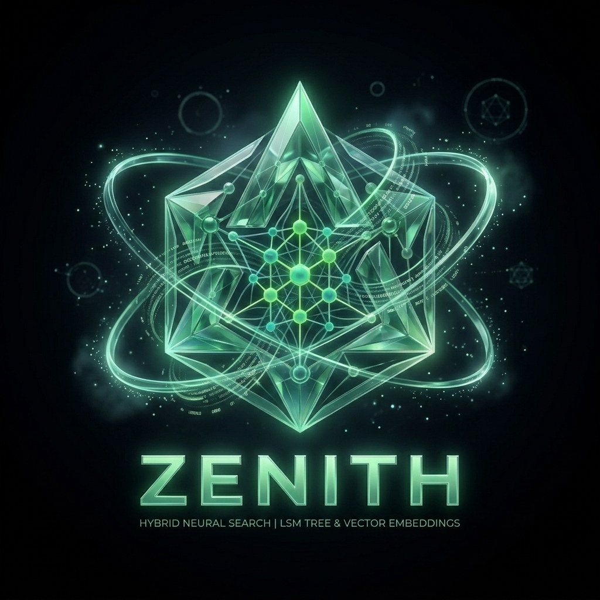

ZENITH indexes your local codebase and documentation for instant natural language query resolution. Powered by a custom LSM tree, BM25 scoring, BK-tree fuzzy matching, and automated vector embeddings.
Average Search Latency
Neural Embeddings
BK-Tree Fuzzy Lookup

Type a query below to see how ZENITH merges BM25 lexical rankings, vector cosine similarity, and BK-tree typo tolerance in real-time.
Click any component in the storage and query pipeline below to examine its internal Go data structures and performance specifications.
Every write operation is first appended to a crash-safe WAL file with CRC32 verification frames before updating the in-memory MemTable.
Designed from first principles to bring server-grade hybrid search capabilities directly to your local workstation.
Built entirely without SQLite, LevelDB, or third-party storage libraries. Implements crash-safe WAL appending, skip-list MemTables, block-structured SSTables, background leveled compaction, and per-segment sparse index maps.
Baked directly into the Go binary. Automatically manages a lightweight Python sidecar virtual environment for 384-dim all-MiniLM-L6-v2 embeddings, with instant fallback to Ollama or offline hash embeddings.
Prunes candidate term lookups using metric tree triangle inequality over Levenshtein distance. Tolerates up to 2 typos without scanning the full inverted index.
Uses fsnotify to continuously index file modifications. Registers native OS boot tasks (Windows Task Scheduler, Linux systemd, macOS LaunchAgents) with zero admin rights.
Exposes index, search, fuzzy, and stats endpoints via standard Protobuf contracts (zenith serve --port 8080) for effortless integration with custom microservices or editor plugins.
Manage indexing, querying, directory watching, server mode, and activity logs through a unified command suite.
Blending the instant speed of local search CLI tools with modern neural understanding.
| Feature | Standard Grep / Ripgrep | Vector Databases | ZENITH |
|---|---|---|---|
| Semantic Intent Understanding | ✕ Exact match only | ✓ Vector similarity | ✓ Hybrid (BM25 + Vector RRF) |
| Typo Tolerance | ✕ Regex edit distance scan | ✕ Poor lexical fuzzy | ✓ O(log n) BK-Tree Metric |
| Storage Engine | None (Disk scan) | External HNSW / Disk | ✓ Ground-Up LSM-Tree Engine |
| Installation & Setup | ✓ Single binary | ✕ Docker / Server cluster | ✓ Single binary (Self-contained) |
| Offline Fallback Mode | ✓ N/A | ✕ Requires remote API key | ✓ Zero-dependency Hash Embedder |
Zero manual configuration files required. ZENITH automatically initializes its embedding pipeline on first run.
Install the latest compiled binary directly via Go toolchain onto Linux, macOS, or Windows.
Walks documents, extracts text & AST tokens, generates vector embeddings, and builds the LSM tree index.
Query with natural language, code fragments, or fuzzy terms to receive rank-fused results instantly.